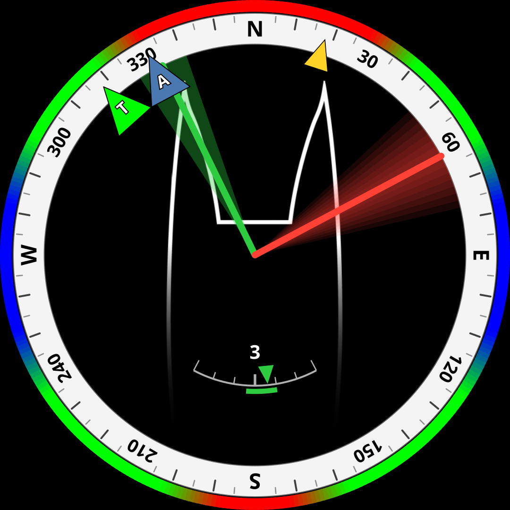
Répétiteur d'instruments NMEA 2000 pour tablette Android
et navigateur web (§ 9)
Manuel d'utilisation — version 0.1
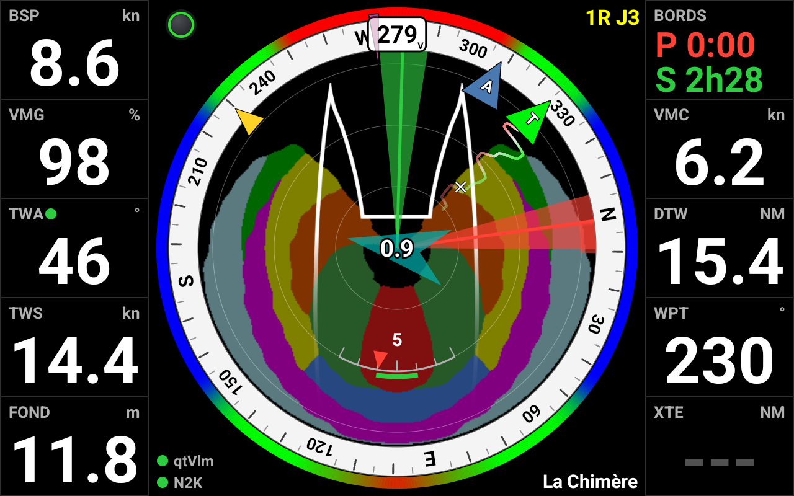
Mise en page conçue pour la SailProof SP10X (1280 × 800, Android 16).
Fonctionne aussi sur téléphone et autre tablette (Android 13 ou plus récent).
n2kdran affiche sur une tablette les instruments du bord diffusés sur le Wi-Fi par une source N2K : un appareil qui relaie le bus NMEA 2000 en TCP au format YDRAW (« RAW » de Yacht Devices), par exemple o3nav (logiciel n2k-mux), et y ajoute une aide à la décision pour la marche du bateau : cibles de polaire, laylines corrigées du courant, temps et distances jusqu'au waypoint.
L'écran comporte une rose des vents au centre, cinq cases de données de chaque côté.
n2kdran n'est pas distribué par le Play Store : il s'installe à partir du fichier n2kdran-<version>.apk (Android 13 ou plus récent).
Orientation. L'écran est toujours en paysage, dans un sens ou dans l'autre : une tablette montée à l'envers sur son support s'affiche à l'endroit (rotation automatique d'Android). Pour figer le sens, verrouiller la rotation dans le panneau rapide d'Android quand l'écran est dans le bon sens.
La connexion se rétablit seule après une coupure (source N2K redémarrée, Wi-Fi perdu) : n2kdran réessaie toutes les 2 s.
Dans qtVlm (celui d'o3nav à bord) : Connexions NMEA → Autres options → Envoyer WP actif à la sortie NMEA, cocher :
| Case qtVlm | Ce qu'elle apporte à n2kdran |
|---|---|
| RMB | distance et relèvement du WP (indispensable aux temps et distances jusqu'au WP) |
| WPL | nom du WP, affiché en bas à droite |
| XTE | écart de route (case XTE), émis quand qtVlm suit une route |
Les autres cases (BWC…) ne sont pas utiles à n2kdran. La sortie de qtVlm doit être en UDP, port 2800, avec l'interrupteur « NMEA2000 » activé.
Un paquet adressé à la tablette n'est remis qu'à un seul des programmes qui écoutent le même port : qtVlm et n2kdran ne peuvent donc pas écouter tous les deux le port 2800. n2kdran reçoit la navigation et la relaie à qtVlm, sans la modifier :
Le relais ne fonctionne que si n2kdran est actif (premier plan ou arrière-plan) ; le compteur « relayés » de l'écran de mise au point (§ 7) permet de le vérifier.
Une fois le Wi-Fi connecté, n2kdran fait passer les connexions vers le réseau du bord par le Wi-Fi, même si le téléphone préfère la 4G pour le reste.
n2kdran continue de recevoir et de calculer quand on passe à une autre application ou que l'écran est masqué : les moyennes de 10 minutes, l'historique des laylines, la dérive mesurée et l'historique de barre ne sont pas perdus. Une notification permanente « n2kdran actif » le signale.
Pour arrêter réellement n2kdran (et économiser la batterie), utiliser le bouton Arrêter de cette notification. Au premier lancement, accepter l'autorisation d'afficher les notifications.
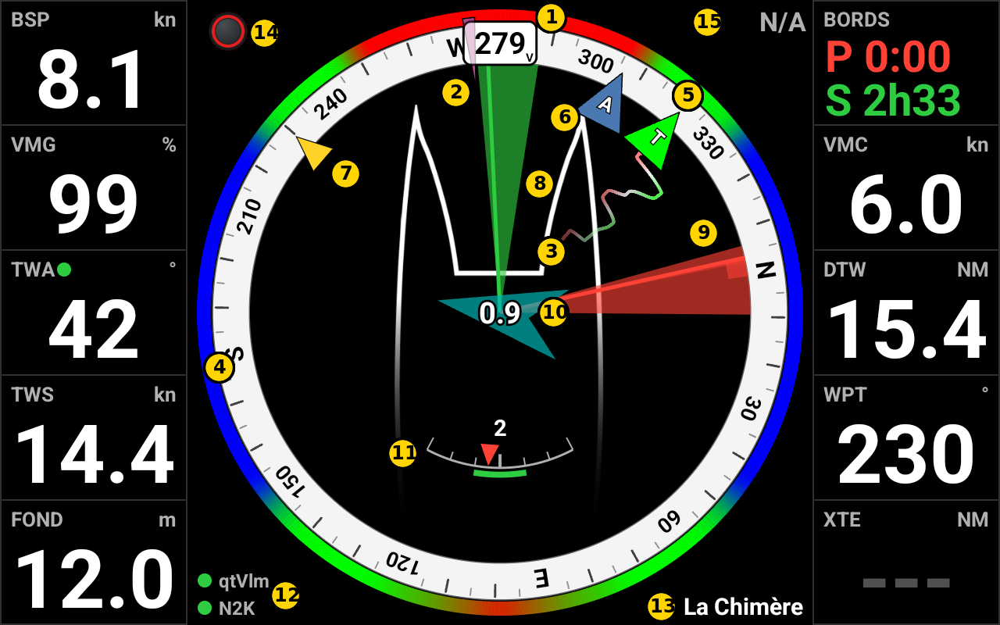
| N° | Élément | Signification |
|---|---|---|
| 1 | Cap | Cap en haut de la rose, qui tourne pour garder l'étrave en haut. La petite lettre dans le coin du cadre indique la référence : V (vrai), M (magnétique), C (route fond) — voir § 5. |
| 2 | COG | Triangle fin magenta, base sur le cercle des allures et pointe vers le centre, visible en transparence sous le cadre du cap : route fond. À gauche de l'étrave, le bateau est déporté vers la gauche sur le fond. |
| 3 | Traînée TWD | Direction du vent vrai sur les 10 dernières minutes, du bord de la carte (maintenant) vers le centre ; vert = adonnante, rouge = refus (§ 3.8). |
| 4 | Cercle des allures | Anneau extérieur, fixe, lié au bateau : couleur de chaque angle de vent selon la polaire (§ 3.2). |
| 5 | Triangle T | D'où vient le vent vrai (TWA) : il pointe vers le cercle des allures. Sa couleur dit si l'angle est bon (§ 3.2). |
| 6 | Triangle A | D'où vient le vent apparent (AWA). |
| 7 | Triangle jaune | Relèvement du waypoint (si qtVlm navigue vers un WP) ; il passe par-dessus les triangles T et A, qui restent visibles autour car plus grands. |
| 8 | Layline de l'amure en cours | Trait plein : route fond à l'angle optimum sur cette amure. Secteur : variations du vent sur 10 min. |
| 9 | Layline de l'amure opposée | Route fond après virement ou empannage, avec historique, zone floue d'incertitude et arc du même TWA sur l'autre amure (§ 3.3). |
| 10 | Courant | Flèche bleu-vert semi-transparente : direction vers laquelle porte le courant ; force en nœuds au centre. |
| 11 | Jauge de barre | Angle de barre ±15°, repère vert à tribord, rouge à bâbord ; barre verte : amplitude sur 2 min. |
| 12 | Indicateurs | État des connexions qtVlm et N2K (§ 3.5). Un appui ouvre les réglages. |
| 13 | Nom du WP | Nom du waypoint de destination envoyé par qtVlm. |
| 14 | Bouton du sail chart | Affiche ou masque le sail chart au centre de la rose (§ 3.7). Anneau vert = affiché, rouge = masqué (comme sur cette capture). |
| 15 | Voile | Configuration de voilure recommandée par le sail chart, dans sa couleur ; toujours affichée, même sail chart masqué. « N/A » en gris : le sail chart ne recommande aucune voile à cet angle (par exemple sous 42° de TWA pour le CM50). |
Dix cases, cinq de chaque côté. Chacune affiche son libellé, son unité et sa valeur en gros chiffres. Le contenu de chaque case se choisit (§ 4). Pour TWA et AWA, le petit point à côté du libellé donne l'amure : vert = tribord, rouge = bâbord.
La colonne de droite a deux versions : sans WP (par défaut SOG, AWA, AWS, gîte, fond) et avec WP actif (par défaut BORDS, TTW, DTW, WPT, fond). Elle bascule seule quand qtVlm navigue vers un WP.
Le cercle des allures est indexé sur l'angle du vent vrai : son haut correspond au vent de face, son bas au vent arrière. Le triangle T pointe vers lui et prend la couleur de la zone qu'il désigne.
| Couleur | Signification |
|---|---|
| Vert | Angle optimum : le VMG à cet angle atteint au moins 99 % du meilleur VMG de la polaire. |
| Rouge | Trop près du vent au près (pincé), ou trop abattu au portant. |
| Bleu | Trop abattu au près, ou trop lofé au portant (côté travers). |
Le passage du vert au rouge ou au bleu est progressif : la couleur est franche quand le VMG tombe à 90 % de l'optimum. Les zones changent avec la force du vent, puisque la polaire en dépend.
Un trait fin vert foncé barre le cercle des allures à l'angle optimum de l'allure en cours, des deux bords : c'est l'angle de la case ANGLE OPT et celui qui sert aux laylines. Il est utile quand la zone verte est large (polaire plate) : on voit où, dans la zone, se trouve le meilleur VMG.
Les laylines sont des routes fond : elles tiennent compte du courant et de la dérive. Elles se comparent donc au triangle jaune du WP et au repère COG.
La flèche bleu-vert indique la direction vers laquelle porte le courant ; sa longueur croît avec la force jusqu'à 4 nœuds. Si aucun instrument ne fournit le courant, n2kdran le calcule : route fond moins route surface. Avant tout virement, ce courant calculé contient aussi la dérive du bateau.
| Indicateur | État |
|---|---|
| N2K | vert : données reçues · « muet » : connecté mais plus de données · « coupé » (rouge) : pas de connexion, nouvelle tentative toutes les 2 s |
| qtVlm | vert : navigation reçue · gris : rien depuis 5 s (normal si qtVlm ne navigue pas vers un WP) |
| Case | Source | Signification |
|---|---|---|
| BORDS | calcul | Temps à passer sur chaque amure (P = bâbord, S = tribord) en tirant deux bords sur les laylines, aux vitesses cibles. 0 sur une amure = WP atteignable directement sur l'autre : le temps est alors DTW / VMC (vitesse de rapprochement réelle, comme qtVlm). |
| TTW | calcul | Temps total jusqu'au WP (somme des deux bords). |
| DTW | calcul | Distance totale à parcourir en tirant les bords. |
| DTW DIRECT | qtVlm | Distance en ligne droite. |
| WPT | qtVlm | Relèvement vrai du WP. |
En deux bords, ces valeurs supposent qu'on navigue aux cibles de la polaire : elles ne changent pas quand on change de cap sur la même amure. Quand le WP est atteignable sans virer ni empanner, elles suivent la VMC réelle (route directe, plus rapide que la layline). « --- » signifie que le WP n'est pas atteignable à l'allure actuelle (par exemple un WP au vent alors qu'on est au portant).
Le sail chart (fichiers qtVlm) est dessiné en polaire, lié au bateau comme le cercle des allures : l'angle depuis l'étrave est le TWA, la distance au centre la force du vent (cercles tous les 10 nœuds). Chaque zone a la couleur de sa configuration de voilure ; la croix blanche marque la situation actuelle (TWA, TWS). Le sail chart passe sous les laylines, le courant et la jauge de barre, qui restent lisibles. Le bouton rond en haut à gauche de la rose (14) ou les réglages (§ 5) le masquent ; le nom de la voile (15) reste affiché.
La traînée trace la direction du vent vrai (TWD) des 10 dernières minutes, lue sur la carte comme les laylines. La valeur actuelle est au bord intérieur de la carte, sous les triangles T et A ; les valeurs plus anciennes se rapprochent du centre (10 min = 80 % du rayon) et s'effacent progressivement. La forme de la traînée montre la rotation du vent ; sa couleur dit directement si c'est un refus ou une adonnante.
| Couleur | Signification |
|---|---|
| Vert | Adonnante : le vent est plus à l'arrière que la moyenne des 10 min, sur l'amure actuelle. |
| Rouge | Refus : le vent est plus sur l'avant que la moyenne. |
| Blanc | Vent proche de sa moyenne. |
La couleur est franche à 10° d'écart. Elle se juge sur l'amure actuelle : après un virement, un refus devient une adonnante, et les couleurs de toute la traînée s'inversent.
n2kdran lit les cibles AIS du flux de la source N2K (positions des classes A et B, noms). Il ne dessine pas de carte AIS, qui reste le rôle de qtVlm : il surveille seulement la cible la plus menaçante et les balises de détresse. Une cible dont la position n'est plus reçue depuis 6 min est oubliée.
Cible la plus menaçante (case AIS). Pour chaque cible, n2kdran calcule le CPA (distance au point de rapprochement maximal) et le TCPA (temps jusqu'à ce point) à partir de notre position, COG et SOG et de ceux de la cible. Ne comptent que les cibles qui se rapprochent, à moins de la portée réglée (15 NM par défaut ; au-delà, CPA et TCPA ne sont pas calculés), avec un TCPA sous le seuil réglé et une vitesse relative d'au moins 0,5 nœud : quand nous sommes nous-mêmes au mouillage ou à quai, les bateaux immobiles autour de nous ne déclenchent rien, pas plus que ceux qui font la même route. En route, un bateau au mouillage sur notre trajectoire est en revanche une cible dangereuse, sauf si l'option « pas d'alarme pour une cible immobile » est cochée : une cible à moins de 0,5 nœud (ou dont la vitesse est inconnue) est alors seulement suivie, affichée en blanc et sans alarme. La case montre la cible retenue (nom, ou MMSI s'il est inconnu, en haut à droite), son CPA en milles et son TCPA en minutes.
| Affichage | Signification |
|---|---|
| Blanc | Cible qui se rapproche, mais CPA au-dessus du seuil : la plus proche au CPA est affichée. |
| Rouge | Cible dangereuse : CPA et TCPA sous les seuils des réglages (0,5 NM et 20 min par défaut). S'il y en a plusieurs, celle qui arrive le plus tôt. La couronne blanche de la rose pulse vers le rouge et la tablette bipe toutes les 3 s (volume « alarme » de l'appareil, tel qu'il est réglé), même si la case AIS n'est pas affichée. |
| « --- » | Aucune cible ne se rapproche, ou position du bateau absente. |
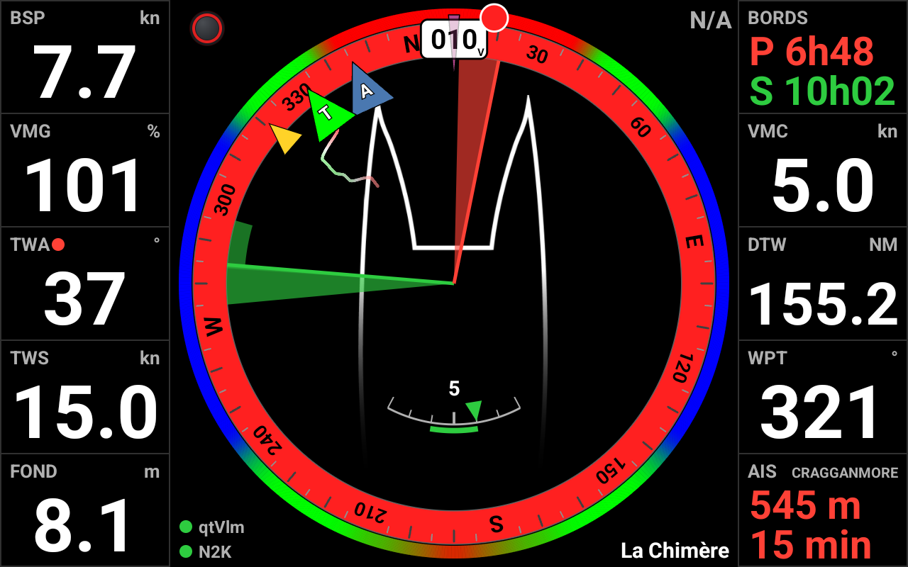
Point rouge. Chaque alerte (cible dangereuse, balise de détresse) est marquée d'un point rouge sur le cercle des allures, dans la direction de la cible. Il pulse tant que l'alerte n'est pas acquittée. Les distances sont données en mètres sous 1 000 m, en milles au-delà.
| Appui sur le point rouge | Effet |
|---|---|
| 1er appui | Acquitte l'alerte : le bip ou l'alarme se tait, la couronne et le point cessent de pulser, le bandeau d'une balise disparaît (sauf homme à la mer, voir plus bas). Le point reste affiché. |
| 2e appui | Passe à la cible suivante : la cible acquittée est écartée et la suivante (cible dangereuse ou balise) est signalée à son tour, avec son bip. |
Quand plus aucune alerte n'est en cours, les acquittements sont oubliés : une cible qui redevient dangereuse est de nouveau signalée.
Balise de détresse. Une balise AIS-SART (MMSI 970…), un MOB AIS (972…) ou une EPIRB AIS (974…) active fait apparaître un bandeau rouge clignotant au centre de la rose : type de balise, nom ou MMSI, distance et relèvement. La tablette sonne une alarme continue, avec le volume « alarme » monté au maximum le temps de l'alerte puis remis à sa valeur. S'il y a plusieurs balises, la plus proche est signalée. Une balise qui n'émet plus est oubliée au bout de 6 min.
Les balises en mode test sont ignorées : statut de navigation « test » (15), ou message de sécurité AIS (PGN 129802) contenant « TEST » (« SART TEST », « MOB TEST », « EPIRB TEST ») ; la balise est alors ignorée 10 min, sauf si elle annonce « ACTIVE ».
Une balise juste déclenchée émet avant d'avoir son point GNSS : l'alerte part tout de suite. Une SART ou une EPIRB sans position affiche « position inconnue », sans distance ni point rouge ; un appui sur le bandeau l'acquitte. Dès que la balise envoie sa position, distance et relèvement s'affichent ; sa dernière position connue est gardée si elle cesse ensuite d'en envoyer.
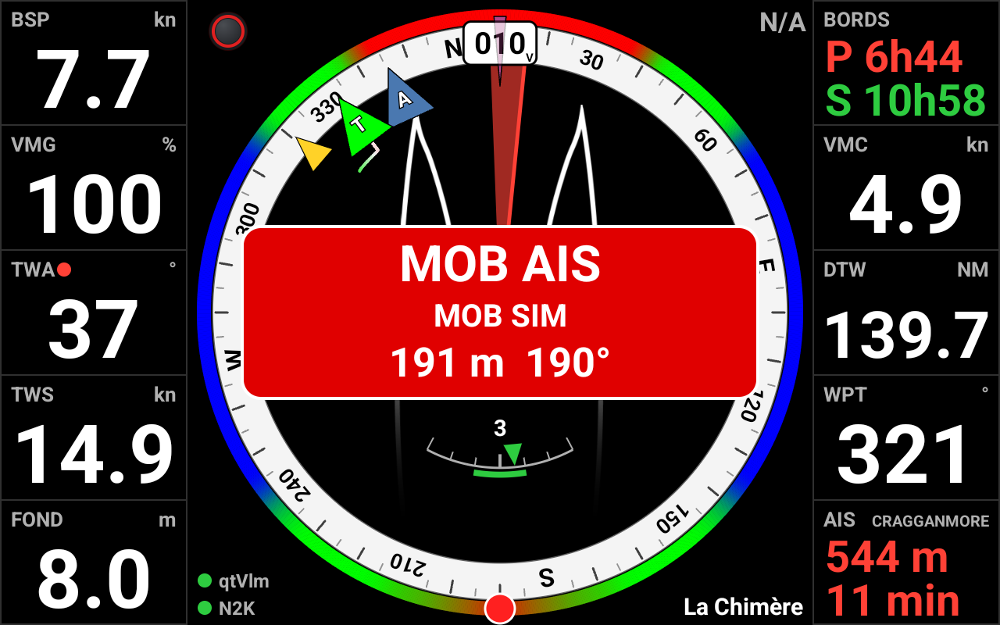
Homme à la mer. Un MOB AIS (972…, par exemple une balise personnelle Ocean Signal MOB2) ou une alerte homme à la mer du bus N2K (PGN 127233 : émetteur MOB ou bouton MOB d'un appareil du bord) passe avant tout le reste :
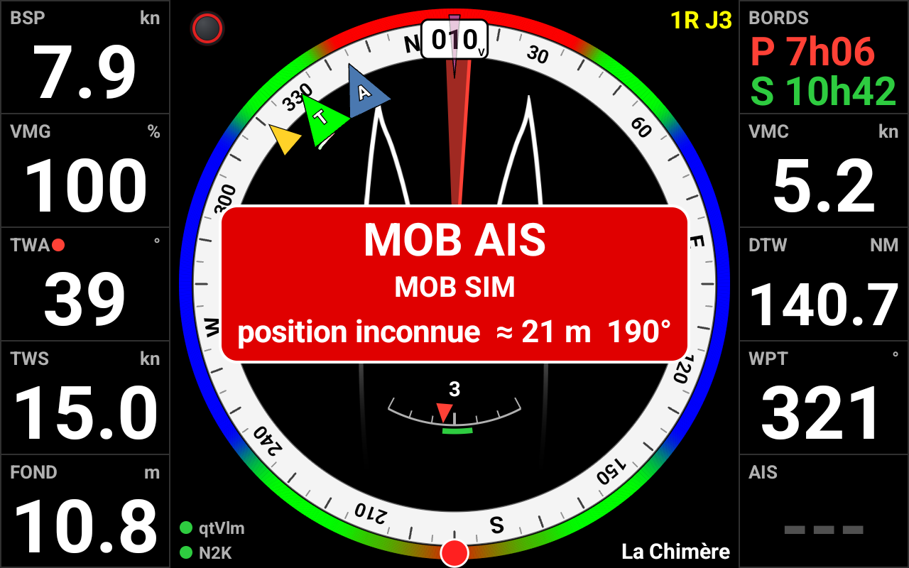
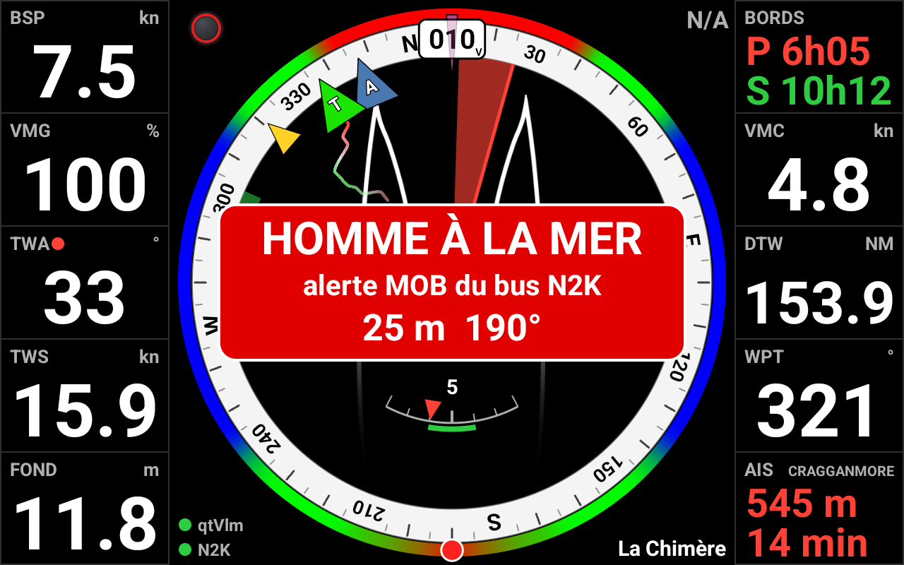
| Geste | Action |
|---|---|
| 1 appui sur « qtVlm » ou « N2K » | Ouvre les réglages |
| 1 appui sur le bouton rond (haut gauche de la rose) | Affiche ou masque le sail chart au centre de la rose (anneau vert = affiché, rouge = masqué) ; le nom de la voile reste affiché |
| 3 appuis rapides sur une case | Choix de la donnée affichée dans cette case |
| 2 appuis rapides n'importe où | Écran de mise au point (toutes les données en texte) ; 2 appuis pour revenir |
| 1 appui sur un point rouge AIS | Acquitte l'alerte ; 2e appui : cible suivante (homme à la mer : coupe seulement l'alarme) (§ 3.9) |
| Appui long | Mode nuit (luminosité minimale + voile sombre) ; appui long pour revenir |
Les appuis multiples doivent être rapprochés (moins de 0,35 s) et au même endroit. Un appui simple sur une case ne fait rien.
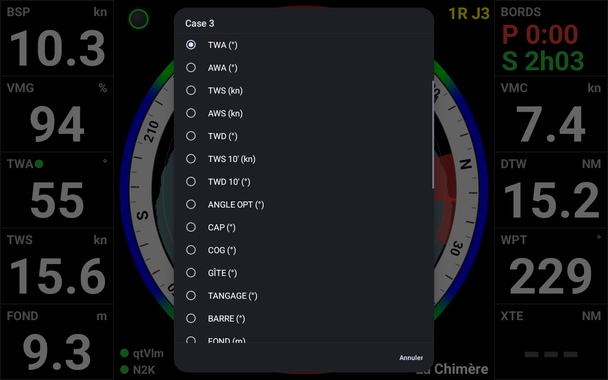
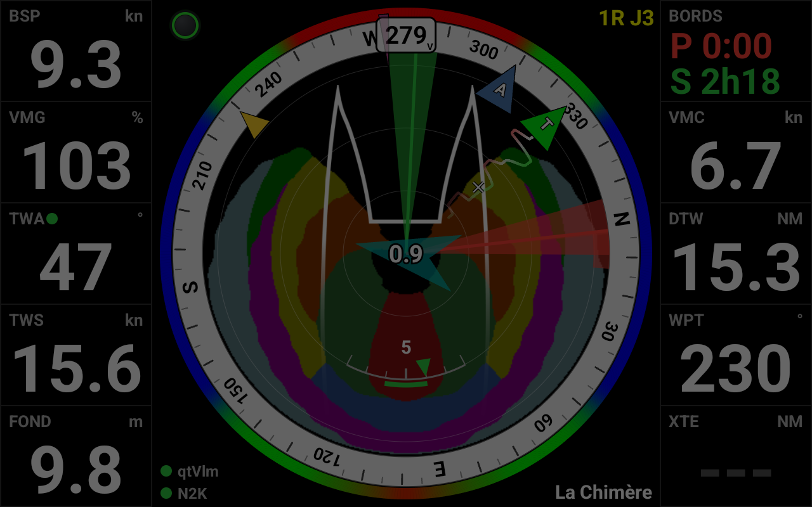
Les couleurs restent celles du jour. L'intensité du voile se règle dans les réglages (« Atténuation de nuit »). Le mode nuit ne survit pas à un redémarrage de l'application.
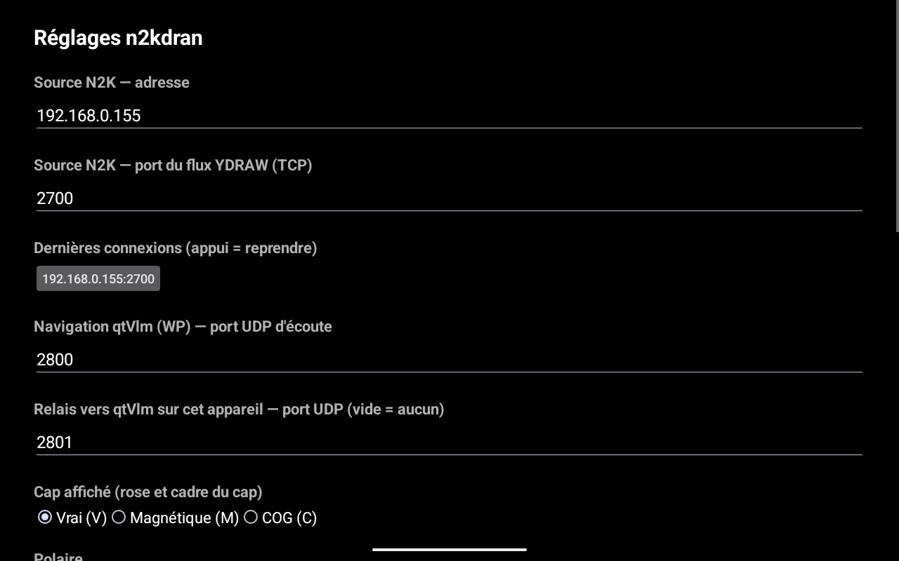
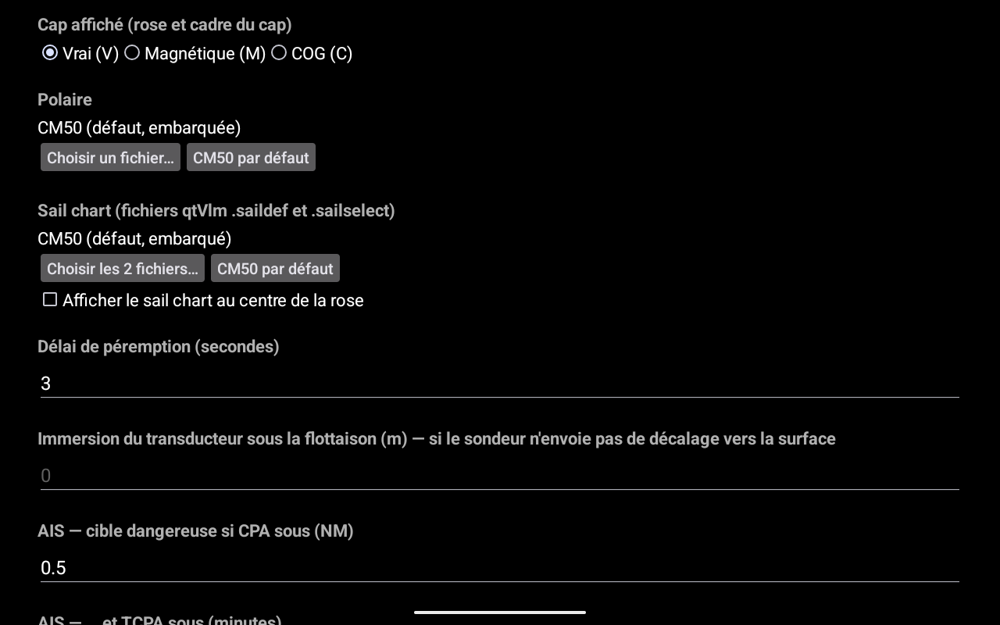
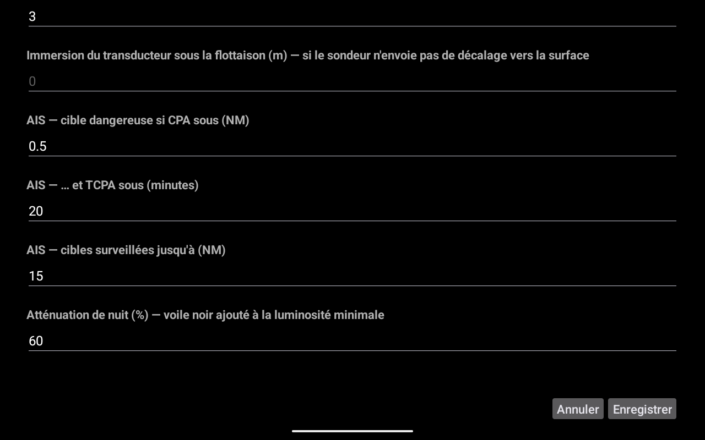
| Réglage | Défaut | Rôle |
|---|---|---|
| Source N2K — adresse | 10.3.0.2 | Adresse de la source N2K sur le réseau du bord (10.3.0.2 = o3nav) |
| Source N2K — port du flux YDRAW | 2700 | Port TCP du flux YDRAW |
| Dernières connexions | — | Les 3 dernières sources N2K auxquelles la connexion a réussi (la plus récente à gauche). Un appui remplit l'adresse et le port ; enregistrer pour l'appliquer. Une adresse qui n'a jamais répondu n'y figure pas |
| Navigation qtVlm | 2800 | Port UDP sur lequel n2kdran reçoit la navigation envoyée par qtVlm |
| Relais vers qtVlm sur cet appareil | vide | Port UDP local (par exemple 2801) vers lequel n2kdran renvoie chaque paquet de navigation reçu, pour qtVlm installé sur la même tablette (§ 2.3). Vide = pas de relais |
| Cap affiché | Vrai | Vrai (V), magnétique (M : cap vrai corrigé de la variation) ou COG (C : route fond en haut de la rose, le bateau pivote de l'écart entre cap et route). Les cases restent en vrai. |
| Polaire | CM50 | Fichier polaire qtVlm (.pol / .csv). Il est vérifié avant d'être retenu ; « CM50 par défaut » revient à la polaire intégrée |
| Sail chart | CM50 | Fichiers qtVlm .saildef et .sailselect, à choisir ensemble ; vérifiés avant d'être retenus |
| Sail chart au centre de la rose | Oui | Sail chart en polaire au centre de la rose (angle depuis l'étrave = TWA, distance au centre = TWS, cercles tous les 10 kn, croix = situation actuelle). Le nom de la voile retenue s'affiche toujours en haut à droite de la rose |
| Délai de péremption | 3 s | Au-delà, une donnée non reçue s'affiche « --- » |
| Immersion du transducteur | 0 m | Profondeur du transducteur sous la flottaison, ajoutée à la profondeur mesurée pour la case FOND quand le sondeur n'envoie pas lui-même de décalage vers la surface (décalage absent, nul ou négatif) |
| AIS — CPA | 0,5 NM | Cible dangereuse si son CPA est sous ce seuil (0,05 à 5 NM)… |
| AIS — TCPA | 20 min | … et son TCPA sous ce seuil (1 à 120 min). Au-delà, la cible n'est pas surveillée (§ 3.9) |
| AIS — portée | 15 NM | Cibles plus éloignées ignorées : ni CPA ni TCPA calculés (0,5 à 50 NM) |
| AIS — cible immobile | décochée | Cochée : une cible à moins de 0,5 nœud (mouillage, quai…) ne déclenche jamais d'alarme ; elle reste affichée en blanc (§ 3.9) |
| Atténuation de nuit | 60 % | Opacité du voile sombre en mode nuit (0 à 90 %) |
| Libellé | Unité | Donnée |
|---|---|---|
| BSP | kn | Vitesse surface |
| CIBLE | kn | Vitesse cible à l'angle optimum (polaire) |
| SOG | kn | Vitesse fond |
| VMG | kn | Vitesse utile face ou dos au vent |
| VMG | % | VMG en % du VMG cible |
| POLAIRE | % | BSP en % de la vitesse polaire à l'angle et au vent actuels |
| TWA / AWA | ° | Angle du vent vrai / apparent (point = amure) |
| TWS / AWS | kn | Force du vent vrai / apparent |
| TWD | ° | Direction du vent vrai |
| TWS 10' / TWD 10' | kn / ° | Moyennes sur 10 minutes |
| ANGLE OPT | ° | Angle de vent optimum (polaire), stabilisé pour ne pas sauter entre deux optimums voisins |
| CAP / COG | ° | Cap vrai / route fond |
| GÎTE / TANGAGE / BARRE | ° | Angles signés |
| FOND | m | Profondeur sous la surface : profondeur sous le transducteur + décalage du sondeur s'il est positif, sinon + immersion du transducteur (§ 5) |
| LOCH / JOURNALIER | NM | Distances totale et journalière |
| COURANT / DIR. COURANT | kn / ° | Force et direction du courant |
| DÉRIVE | ° | Dérive du bateau mesurée (après un virement) |
| T° EAU / T° AIR / PRESSION | °C / hPa | Environnement |
| BORDS / TTW / DTW / DTW DIRECT / WPT | Navigation vers le WP (§ 3.6) | |
| VMC / XTE | kn / m ou NM | Vitesse de rapprochement du WP / écart de route (en mètres sous 0,1 NM, en milles au-delà ; pastille verte = à droite de la route, rouge = à gauche ; nécessite la case XTE dans qtVlm) |
| SATELLITES / HDOP | Qualité de la position GNSS | |
| VOILE | Configuration de voilure recommandée par le sail chart (fichiers qtVlm), sur sa couleur qtVlm ; elle ne change qu'après 3 s de stabilité. « N/A » : aucune voile recommandée à cet angle | |
| AIS | NM / min | Cible AIS la plus menaçante : nom ou MMSI, CPA et TCPA, en rouge si dangereuse (§ 3.9) |
| SAIL | Mini sail chart : TWA (40–180°) en abscisse, TWS en ordonnée, zones lissées colorées par configuration, croix à la position actuelle |
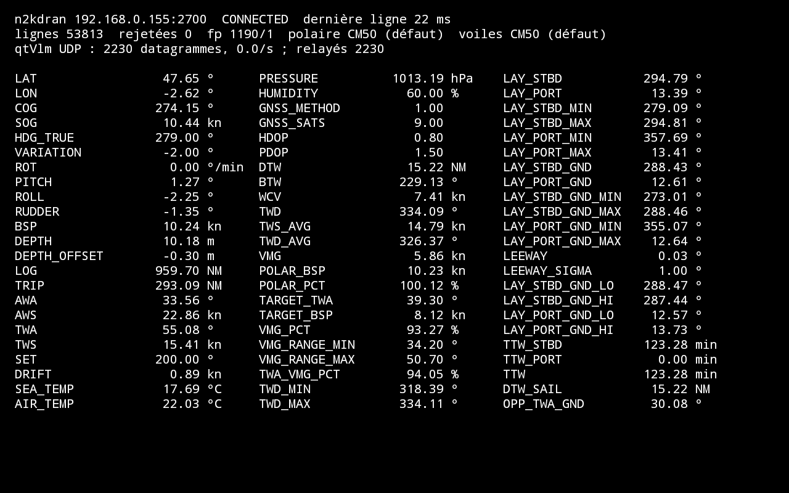
Double appui : toutes les données reçues et calculées s'affichent en texte, avec l'état de la connexion, le nombre de lignes reçues et rejetées, et la polaire utilisée. L'écran défile au doigt. Les noms sont ceux du cœur de calcul ; par exemple, DTW y est la distance directe et DTW_SAIL la distance en tirant les bords.
DEPTH_OFFSET dans l'écran de mise au point. Positif, la case FOND est déjà sous la surface ;
négatif ou nul, saisir l'immersion du transducteur dans les réglages.Le même écran s'affiche dans un navigateur, sur un ordinateur du bord (o3nav, portable…). Les calculs sont ceux de la
tablette : le même cœur de calcul tourne dans la page. Un navigateur ne sait pas se connecter seul au flux N2K
(ni TCP ni UDP) : un petit programme, le relais (web/relay.py, Python 3 seul, rien à installer),
lit le flux de la source N2K et la navigation de qtVlm, et les transmet à la page.
| Flux | Chemin |
|---|---|
| Instruments, AIS | source N2K (TCP 2700, lecture seule) → relais → page |
| Navigation qtVlm | qtVlm (UDP 2800, vers l'adresse de l'ordinateur) → relais → page |
Le relais s'installe en service utilisateur (sans droits d'administrateur) et démarre avec la session.
Depuis le dossier n2kdran :
mkdir -p ~/.config/systemd/user ~/.config/n2kdran-webcp web/n2kdran-web.service ~/.config/systemd/user/~/.config/n2kdran-web/env, une ligne SOURCE=… :
SOURCE=127.0.0.1:2700 ;SOURCE=10.3.0.2:2700 ;SOURCE=can:can0
(lecture seule, rien n'est émis sur le bus) ;systemctl --user daemon-reload && systemctl --user enable --now n2kdran-webOuvrir ensuite http://localhost:8090/. Pour démarrer le relais sans session ouverte :
loginctl enable-linger $USER. Après une mise à jour de n2kdran : systemctl --user restart n2kdran-web,
puis recharger la page. Le port 8090 se change par une ligne HTTP=… dans le même fichier
(8080 est celui de l'interface web de n2k-mux).
Dans Brave ou Chrome, la page s'installe comme une application : menu ⋮ → Enregistrer et partager →
Installer la page en tant qu'application. Elle s'ouvre alors dans sa propre fenêtre, redimensionnable, sans onglets
ni barre d'adresse, et figure dans le menu des applications. Sans installation :
brave-browser --app=http://localhost:8090/. Touche F ou F11 : plein écran.
Le dessin garde la proportion 1280 × 800 et se centre dans la fenêtre : une fenêtre d'une autre forme laisse des bandes noires.
Les gestes sont ceux de la tablette (§ 4), à la souris ou au doigt : un clic vaut un appui.
| Touche | Action |
|---|---|
| F ou F11 | Plein écran (aussi par le bouton des réglages) |
| N | Mode nuit |
| D | Écran de mise au point (double clic dessus pour revenir) |
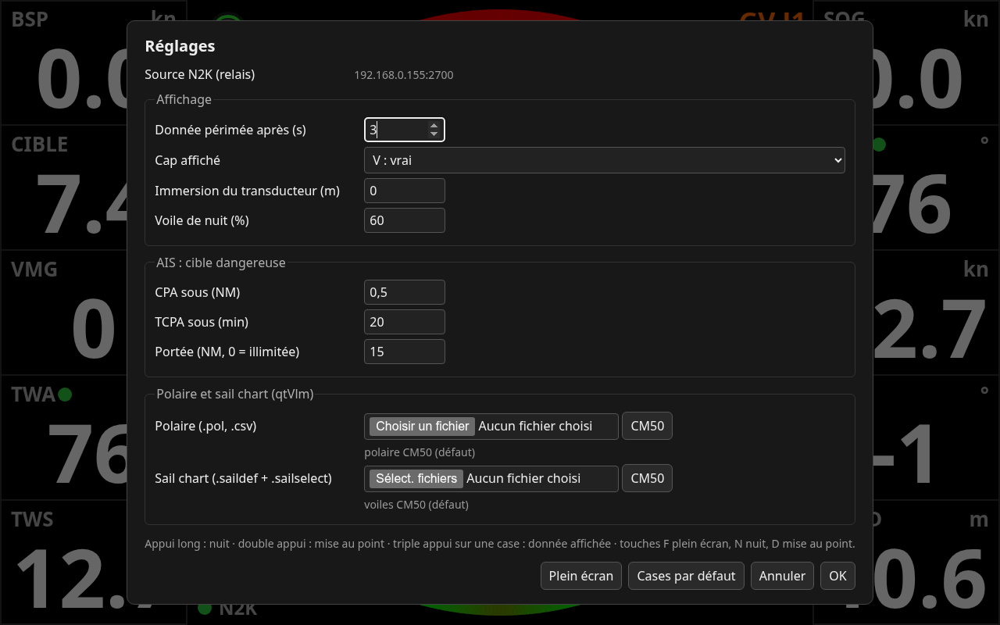
Les réglages sont ceux de la tablette (§ 5), sauf la source N2K : elle est fixée par le relais (§ 9.1) et seulement rappelée en haut. Ils sont gardés par le navigateur, pour cette page : un autre navigateur ou un autre ordinateur a ses propres réglages. « Cases par défaut » rétablit le contenu d'origine des cases.
localhost.